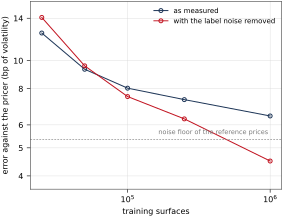
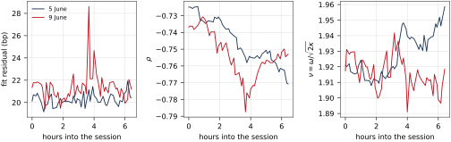
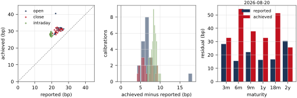

Last month we compared two ways of pricing European options under the Heston model and argued that the differences between them only really matter inside a calibration loop, where a whole surface is recomputed at every iteration. Both methods work because Heston is an affine model, meaning that its characteristic function is known in closed form. But what if we are working with a more complex model, where only e.g. Monte Carlo methods are available for the computation of prices?
In this post, we will explore one approach to tackle this issue. The idea is that when making a pricer fast enough is impossible, we can instead pay the computational cost once and generate a large collection of priced surfaces from known model parameters, and use this to learn a function that replaces the expensive Monte Carlo run. I will do this for the one-factor Bergomi model, which has no easy semi-analytic characteristic function and no closed-form price formula of any kind (as far as I know). The goal is to learn the map that takes model parameters to market prices, so that we can calibrate quickly and efficiently, even with models that require simulation engines to price.
Calibration takes a set of market quotes and returns model parameters. It is usually implemented as an optimisation routine, but at the end of the day it computes a function that maps a given surface to (near best) calibrated parameters. The main point is that no one forces us to evaluate that function by running the optimiser every time: if we can approximate it directly, we can replace an iterative procedure by a single evaluation. This is the observation behind Hernandez [4] and the line of work that followed it.
There are two natural sets of data one can learn from and the resulting network (or map) we build. One is the pricing or forward map, that takes model parameters to prices (or implied volatilities), and this is what Liu, Oosterlee and Bohte [5] do. The other is the calibration or inverse map, from the surfaces back to the parameters, which is what Horvath, Muguruza and Tomas [6] discuss under the name of a "two-step approach".
The inverse (calibration) map is the more ambitious of the two, since it removes the optimiser entirely, but it is thus much more fragile: it only exists as a function if distinct parameter sets produce distinct surfaces. If this is not the case, no amount of training data that can help us, as there is just no function to learn to begin with! At any rate, both approaches need the same input: a large collection of pairs consisting of model parameters and the quotes they generate. In particular, the inverse map approach requires to choose model parameters in a way that are (nearly) perfectly identifiable from market prices, which could fail if the model is not specified correctly.
The Bergomi model [1], [2] is built on the forward variance curve rather than on the instantaneous variance, mimicking the usual practitioner approach for short rate models in the spirit of Heath--Jarrow--Morton. In the one-factor case one takes a zero-mean Ornstein--Uhlenbeck state variable \[ dX(t) = -\kappa X(t)\, dt + dw(t), \qquad X(0) = 0, \] and sets the instantaneous variance to \[ \sigma(t)^2 = \xi_0(t) \exp\left(\omega X(t) - \tfrac12 \omega^2 v(t)\right), \qquad v(t) = \frac{1 - e^{-2\kappa t}}{2\kappa}, \] with $v(t)$ the variance of $X(t)$ and $dw dz = \rho\, dt$ the correlation between the factor and the spot. The exponential keeps the variance positive, and the subtraction of $\tfrac12\omega^2 v(t)$ is exactly what makes the exponential a martingale, so that $\mathbb{E}[\sigma(t)^2] = \xi_0(t)$. That leaves the curve $\xi_0$ together with three scalars as the model parameters: the volatility of volatility $\omega$, the mean reversion $\kappa$, and the spot-variance correlation $\rho$.
The model is normally used with two factors, one fast and one slow, which is what gives it enough freedom to control the term structure of variance; this is the subject of Smile Dynamics II [1]. The single-factor version I use here is a simpler version of this model, which I have decided to stick to as I have never tried this before, and I didn't want to run into issues that could not be easily ascribed to issues with the learning routine due to my unfamiliarity with the two factor model.
The main difference from the Heston model is that the pair consisting of the log-spot and the variance is not affine. The variance is an exponential of an Ornstein--Uhlenbeck process, which one can handle, but there is no easy closed form for characteristic function as we had before. Thus, all the nice results from the last month's post are unavailable to us, and we are left with computing an expected value by drawing paths. Although there may be some corners to cut, this is not the point of the post, so I will ignore any clever optimisations, which would at any rate only speed up the generation of the data set to be learned. Note also that the characteristic function of this model (and even some rough versions) can be approximated (its computation involves a "fractional" version of the Riccati ODEs one can solve by hand) and thus one can go back to the COS method, but that's another story; some details can be found in [8].
To produce our training data, we then just draw model parameters in some way (here different practitioners would have their own idiosyncrasies about which distributions one should draw from), then simulate and read off the resulting quotes. The number of paths to choose and the quality of the pricing engine of course matter but, as before, this is not a concern of this post.
To have an idea of the speed of my Monte Carlo engine, generating a million Bergomi rows took a little over seven hours (or about 26ms per row) in a MacBook Air with an M5 chip. The corresponding Heston set, generated with the cosine method of Fang and Oosterlee [7] from last month's post, produced 500,000 rows in 56 minutes, or under 7ms per row. Monte Carlo turned out to be about four times more expensive here, which is quite a good result! Against all of this, training on the finished data took half an hour.
Once we generated the data and trained, we can look at the results. A small caveat is that Monte Carlo generated data contains, at no fault of its own, noise. Thus, one should take this noise into account when evaluating the quality of the learned function. Note, however, that we do not learn the noise, but it is still there when we evaluate the quality of our network. One option is to compare against prices computed far more accurately than the training labels, and then to remove the noise before measuring. Below, one can see how the more correct measurement breaks past the noise floor that would be impossible to break through otherwise.

The corrected curve falls like $n^{\frac 3{10}}$, and at a million surfaces it reproduces the engine to about five basis points of volatility, which is well below the observed at-the-money bid-ask spread on liquid markets such as those of SPX options. Restricted to a region of parameter space which accounts for what an index like SPX actually needs, the measured error is entirely accounted for by the noise of the reference prices, which is to say: I cannot measure it at all!
With the learned pricing function at hand, the calibration is an ordinary least-squares problem, with the bonus that the objective is easily differentiable, in the sense that the derivative of the surface with respect to the parameters is available to machine precision, at about the cost of one more evaluation due to the usual backpropagation algorithm. The practical consequence is that the whole fit is fast enough to run from e.g. different starting points and keep the best, giving us a cheap way to avoid any possible local minimum.
Of course, fitting data coming from a real surface and a real market is the true test. I took SPX quotes at five-minute resolution and used the calibration routine in four different scenarios: on the opening quotes of every trading day in the month up to 10 September 2026, on the closing quotes of the same days, and two full sessions, chosen for being particularly volatile. The viewer below lets you go over the results and look at model and market quotes.
Dots are market implied volatilities, the line is the calibrated one-factor Bergomi smile. The two sliders move through calibration times and through the six maturities; the residual shown on the panel is for that maturity alone. In moneyness the smile is anchored to the forward, so only its shape moves; in strike the whole surface travels with the underlying. The strip below the panel is the underlying itself over the same window, drawn faint throughout and solid up to the frame on display.
Some goolging reveals that on 5 June 2026 a chip-led selloff took the SP500 down 2.6% and the Nasdaq down 4%. The following Tuesday closed almost unchanged after swinging three per cent during the day, as the chip rebound failed.

On the selloff itself the fitter barely flinched: fifty independent calibrations spanning about three volatility basis points, from 19.2 to 21.9. On the whipsaw day it works visibly harder, with the worst snapshots clustered in the hour when the index gave up its morning rally. The worst fit of that day and the steepest correlation it reports are at the same moment, a quarter of an hour after the low: the skew steepened into the bottom and the model found the surface hard to match. The correlation moved three to four times what it does on a quiet session, reflecting an increased demand for downside protection from market participants.
The vol-of-vol plot is interesting because it is very stable: it stays within a 2.5% band on both days, while the correlation and the fit quality both visibly respond to what the market is doing. It also confirms a simple mathematical fact: the model's Ornstein--Uhlenbeck mean reverting process has a stationary volatility of $\frac 1{\sqrt{2\kappa}}$, so the quotient $\nu = \omega/\sqrt{2\kappa}$ is what our model can identify, and we see it does hold still (as it should!) while the other parameters move more.
What have we achieved? The fits are very good and, more to the point, they are quite tight: the error is about 20-30 volatility basis points on essentially every snapshot, against a market bid-ask of seven or eight, and nothing seems to worsen at the open or over the trading session. The three-month slice is the worst on most days, which is an unsurprising and known model limitation: a single factor cannot decouple short and long volatility shapes.
The calibration speed is what one would hope from a direct function evaluation. A single fit takes 150ms, while a Monte Carlo calibration of the same model on comparable quotes took two minutes and nine seconds! So we get a speed up of a factor of about eight hundred.
To check whether our network is not hiding anything (after all, we are calibrating using its own quotes and errors) I took the calibrated parameters we got from the fast calibration routine, and handed them back to the Monte Carlo engine the network was trained to mimick. I then repriced every one of the fits at a million paths, to answer the question: do the parameters we got fit the market when priced with the original model? If so, how much has the network hidden when we used its own quotes to calibrate and judge the output?

As usual, let me call residual the measure of how far the model sits from the actual market quotes. Let us call disagreement instead how far the network sits from the simulator engine. The first is the fit error, while the second is the error in the tool used to fit.
The result is that the disagreement is low, meaning that we have managed to fit the engine well, but the reported residuals are slightly optimistic by six to eight volatility basis points. In other words, where the network claims e.g. 0.24% the engine finds 0.31%; where it claims 0.20% it finds 0.28%. That is still a very good fit! The Monte Carlo calibration of this model I tried reached twenty-five basis points on comparable quotes, and took a hundred times longer but, at any rate, it is not the fit the optimiser thought it had found, because the optimiser itself uses slightly fuzzy values.
Before reading anything into six tiny basis points, it is good to pause and ask how much of it is simulation noise. Repricing the same fitted parameters with sixteen independent seeds puts the engine's own variance at about 2.5 bp per quote at one million paths. Since residuals neared 30bp, noise is a twentieth of the gap, meaning that something else is afoot. In this case, this can come from the training data not being rich enough to reproduce certain features of the market data we fitted, but I have not investiged this much.
The cost of not having a semi-analytic pricing formula is not high, as long as we can generate useful training data from (and for) our pricer and learn the model's pricing function on market instruments. Learning the forward map turns a two-minute calibration into one that finishes in milliseconds. Thus, the takeaway of this month's post is that when no fast pricer exists one can learn one, and a learned pricer should be more robust than a learned calibrator even though at first it seems to be the less ambitious of the two. The reason has nothing to do with neural networks, it is just that a model always determines its prices, but it does not always determine its parameters.